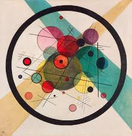

please make sure to use this email to receive a timely response
Class Times & Location
Teaching Team
COMP 551: Applied Machine Learning - Fall 2025
Contact: comp551.cs@mcgill.caplease make sure to use this email to receive a timely response
[expand]
[expand all]
[collapse all]
Overview
-
This course is a mathematically-grounded intro to the fundamentals of machine learning. By the
end of the term you will be able to (i) explain the assumptions and math behind common ML models,
(ii) choose and justify an approach for a new problem, and (iii) implement, evaluate, and debug models
on
real data.
We cover supervised learning (regression, trees, neural networks), basics of unsupervised learning
(clustering, PCA),
generalization and model selection, regularization, and gradient-based optimization. We're committed to
inclusive learning, please reach out if we can do anything to support you.
- Prerequisites [click to expand]
- Solid Python, plus comfort with linear algebra, calculus, and probability. If you'd like a quick self-check, see the short prerequisites quiz linked on MyCourses.
Practical advice for students
- Time & pace
- Plan steady weekly time for quizzes, lectures, and your project team. Consistency beats cramming and is the best way to succeed this class.
- Math refresh
- The class is math-heavy. Consider refreshing your mind on mathematical notations (like index
notation),
basic optimization "by hand"
(e.g., when functions reach a max/min) and probability theory.
A quick review at the beginning will make later weeks much smoother. Youtube is a great resource for
that.
- Linear algebra notation video
- Optimization review video
- Probability review video , Probability theory fundamentals document
- Effective code debugging
- Coding assignments are an important part of the class. If you're stuck, switch to your IDE debugger and step line-by-line, use conditional breakpoints for issues like NaNs. It's faster than sprinkling print statements.
- Group workflow
- Everyone should understand every part of the assignment and gets the same mark. The goal is not to divide and conquer, you should review everything together. Discussion with other teams (the Ed platform is here for that) is highly encouraged.
- Course logistics
- Don't miss quiz windows, they are easy points. Register groups on time each assignment if required by your section's rules.
Textbooks
- [Bishop] Pattern Recognition and Machine Learning by Christopher Bishop (2007)
- [Goodfellow] Deep Learning by Ian Goodfellow, Yoshua Bengio, and Aaron Courville (2016)
- [Murphy] Machine Learning: A Probabilistic Perspective by Kevin Murphy (2012)
- [Murphy'22] Probabilistic Machine Learning: An Introduction, by Kevin P. Murphy (2022)
- Chapters from these four books are cited as optional reference materials for the slides.
There are several other related references. [click to expand the list]
Schedule
- Wed., Aug. 27
Mon., Sept. 1- Wed., Sept. 3
- Mon., Sept. 8
- Wed., Sept. 10
- Mon., Sept. 15
- Wed., Sept. 17
- Mon., Sept. 22
- Wed., Sept. 24
- Mon., Sept. 29
- Wed., Oct. 1
- Mon., Oct. 6
- Wed., Oct. 8
Mon., Oct. 13Wed., Oct. 15- Mon., Oct. 20
- Wed., Oct. 22
- Mon., Oct. 27
- Wed., Oct. 29
- Mon., Nov. 3
- Wed., Nov. 5
- Mon., Nov. 10
- Wed., Nov. 12
- Mon., Nov. 17
- Wed., Nov. 19
- Mon., Nov. 24
- Wed., Nov. 26
- Mon., Dec. 1
- Wed., Dec. 3
Outline
- Introduction
- Parameter Estimation
- Linear regression
- Logistic and softmax regression
- Gradient descent methods
- Regularization
- Generalization
- Perceptrons & multilayer perceptrons
- Gradient computation and automatic differentiation
- Convolutional neural networks
- Neural Networks for Sequences
- Naive Bayes
- Nearest neighbours
- Classification and regression trees
- Linear support vector machines
- Bagging & boosting
- Unsupervised learning
- Dimensionality reduction
Evaluation
- Regular Practice Quizzes [10%]
- First Mid-term Exam [15%]
- Second Mid-term Exam [25%]
- Assignments [50%]
- Bonus point [6.5%]
- Late submission policy
Academic Integrity
- "McGill University values academic integrity. Therefore, all students must understand the meaning and
consequences of cheating, plagiarism and other academic offenses under the Code of Student Conduct and
Disciplinary Procedures" (see McGill's webpage
for more information). (Approved by Senate on 29 January 2003)
Online Resources
- Learning plan
- Video Playlists
- Courses with Playlist and/or Code
- Books with Code
- Similar Courses - Graduate Level
- Similar Courses - Undergraduate Level
- Similar Courses - Last Versions
FAQ
- Class/waitlist is full, can I still register? Unfortunately you will have to wait for the next semester. As an alternative, consider Fundamental of Machine Learning Course, Comp 451, and please check the list of free online courses below.
- Who to contact for department approval required for taking the course? Please contact teresa.pian@mcgill.ca.
- Do I have the prerequisites to take the course? This course requires strong Python programming skills and basic knowledge of probabilities, [multivariate] calculus and linear algebra. Please check this quiz to test if your background is strong enough for taking the course. It can also be used to diagnose where your background might be lacking and be used to self-study before taking the course. Most concepts covered in these questions will be used throughout the course in the slides.
- How similar is it to the last years? Very similar, please check last year's websites to get a glimpse of the slides, expectations, etc. We will have an updated version and not exactly the same materials but very similar overall.
- Will there be lecture recordings? Yes, but class participation is encouraged and rewarded.
- What do I learn in this course? You will learn how the most common machine learning algorithms are designed, how they are implemented, and how to apply them in practice. This course has a heavy theory component, since it is important to understand the inner-workings of the algorithms in order to effectively utilize them in practice. Please check below for more information and note that everything below is tentative.